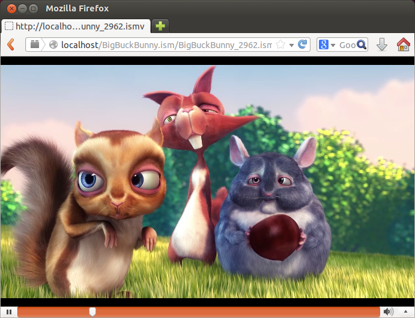
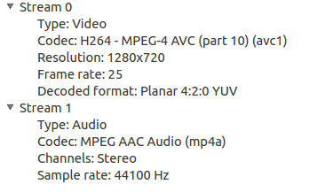

Smooth Streaming on Nginx/Apache - 2014
This chapter is not a success story but records of failures. In short, though the mp4 pseudo streaming seems to be working fine but not smooth streaming. I have spent some time on the module source, and it looks like there should be an initialization done before the client's request: "http://.../Fragments()video=0)" which just contains a "moof" and "mdat" box. When I look at the source code, segment initialization requires "moov" box. So, somehow, initialization should be done by a manifest file before the client's fragment request.
Discussion about this issue can be found here..
Anyway, I need to investigate more on this.
After download the source, installation can be done by using these commands from a terminal:
$ ./configure $ make $ sudo make install
By default, nginx will be installed under /usr/local/nginx.
A module for smooth streaming for nginx is available at
http://h264.code-shop.com/trac/wiki/Mod-H264-Streaming-Nginx-Version2.
Run configure in the nginx directory with the following command:
$ cd ~/nginx-1.4.4 $ ./configure --add-module=$HOME/nginx_mod_h264_streaming-2.2.7 --sbin-path=/usr/local/sbin --with-debug ... Configuration summary + using system PCRE library + OpenSSL library is not used + using builtin md5 code + sha1 library is not found + using system zlib library nginx path prefix: "/usr/local/nginx" nginx binary file: "/usr/local/sbin" nginx configuration prefix: "/usr/local/nginx/conf" nginx configuration file: "/usr/local/nginx/conf/nginx.conf" nginx pid file: "/usr/local/nginx/logs/nginx.pid" nginx error log file: "/usr/local/nginx/logs/error.log" nginx http access log file: "/usr/local/nginx/logs/access.log" nginx http client request body temporary files: "client_body_temp" nginx http proxy temporary files: "proxy_temp" nginx http fastcgi temporary files: "fastcgi_temp" nginx http uwsgi temporary files: "uwsgi_temp" nginx http scgi temporary files: "scgi_temp"
Make and install nginx:
$ make
make -f objs/Makefile
make[1]: Entering directory `/home/khong/Downloads/nginx-1.4.4'
cc -c -pipe -O -W -Wall -Wpointer-arith -Wno-unused-parameter -Werror -g -D_LARGEFILE_SOURCE -DBUILDING_NGINX -I src/core -I src/event -I src/event/modules -I src/os/unix -I objs -I src/http -I src/http/modules -I src/mail \
-o objs/addon/src/ngx_http_h264_streaming_module.o \
/home/khong/nginx_mod_h264_streaming-2.2.7/src/ngx_http_h264_streaming_module.c
In file included from /home/khong/nginx_mod_h264_streaming-2.2.7/src/ngx_http_h264_streaming_module.c:2:0:
/home/khong/nginx_mod_h264_streaming-2.2.7/src/ngx_http_streaming_module.c: In function ângx_streaming_handlerâ:
/home/khong/nginx_mod_h264_streaming-2.2.7/src/ngx_http_streaming_module.c:158:8: error: ângx_http_request_tâ has no member named âzero_in_uriâ
if (r->zero_in_uri)
^
make[1]: *** [objs/addon/src/ngx_http_h264_streaming_module.o] Error 1
make[1]: Leaving directory `/home/khong/Downloads/nginx-1.4.4'
make: *** [build] Error 2
To fix the error, we need to edit the file:
$ vi nginx_mod_h264_streaming-2.2.7/src/ngx_http_streaming_module.c
Comment the lines off as shown below:
/* Commented out
if (r->zero_in_uri)
{
return NGX_DECLINED;
}
*/
Still, we may have some issues like this:
$ make ... cc1: all warnings being treated as errors make[1]: *** [objs/addon/src/mp4_reader.o] Error 1 make[1]: Leaving directory `/home/khong/nginx-1.4.4' make: *** [build] Error 2
It's due to the following line of compile option in nginx-1.4.4/objs/Makefile:
CFLAGS = -pipe -O -W -Wall -Wpointer-arith -Wno-unused-parameter -Werror -g -D_LARGEFILE_SOURCE -DBUILDING_NGINX
Since the Werror treats a warning as an error, I removed the Werror from the options.
Now the compilation is successful.
So, let's check what's been added?
$ ls ~/nginx-1.4.4/objs/addon/src moov.o mp4_reader.o ngx_http_h264_streaming_module.o output_mp4.o mp4_io.o mp4_writer.o output_bucket.o
Let's install nginx.
$ sudo make install
nginx can be located at /usr/local/nginx/sbin.
Since we want to play Multi Bit Rate H.264 encoded videos, we will also need the command line tool mp4split to create the Smooth Streaming manifest files.
wget http://h264.code-shop.com/download/mp4split-2.2.0.tar.gz tar xvzf mp4split-2.2.0.tar.gz
We can make the /usr/local/bin/mp4split command as below:
$ cd ~/mp4split-2.2.0 $ ./configure $ make $ sudo make install and the executable can be located in /usr/local/nginx/sbin
Edit the configuration file in /usr/local/nginx/conf/nginx.conf so that file requests ending in .mp4 and .ismv are handled by the mp4 command.
We need to add the following lines in our server { ... } section:
if ($is_args = "?") {
rewrite ^(.*)\.ism/manifest$ $1.mp4?manifest=1 last;
}
rewrite ^(.*)\.ism/Fragments\((.*)=([0-9]+)\)(.*)$ $1.mp4?$2=$3 last;
rewrite ^(.*)/(.*)\.ism/QualityLevels\(([0-9]+)\)/Fragments\((.*)=([0-9]+)\)(.*)$ $1/$2.ism/$2_$3.ismv?$4=$5 last;
rewrite ^(.*)\.ism/QualityLevels\(([0-9]+)\)/Fragments\((.*)=([0-9]+)\)(.*)$ $1.ism/$1_$2.ismv?$3=$4 last;
location ~ \.mp4$ {
mp4;
}
location ~ \.ismv$ {
mp4;
}
The $is_args evaluates to "?" if $args is set, "" otherwise:
where $args is the GET parameters in request line, e.g. foo=123&bar;=blahblah; This variable could be changed.
. (any character)
* (zero of more of the preceding)
+ (one or more of the preceding)
{} (minimum to maximum quantifier)
? (ungreedy modifier)
! (at start of string means "negative pattern")
^ (start of string, or "negative" if at the start of a range)
$ (end of string)
[] (match any of contents)
- (range if used between square brackets)
() (group, backreferenced group)
| (alternative, or)
\ (the escape character itself)
The last flag tells the server to complete processing of current rewrite directives.
Start nginx:
$ sudo /usr/local/sbin/nginx
We may get the following error:
nginx: [emerg] unknown directive "mp4" in /usr/local/nginx/conf/nginx.conf:58
If that's the case, we should make sure we configured nginx with H264.
./configure --add-module=$HOME/nginx_mod_h264_streaming --sbin-path=/usr/local/sbin --with-debug
When we type in localhost into the browser, we should get:

It's the result of the rendering /usr/loca/nginx/html/index.html file.
This section is incomplete. This approach requires Windows utilities and I could not make it work on Linux (Ubuntu 13.1).
This section follows the general guide from Encoding Smooth Streaming videos
We can get the sample from Big BUck Bunny.
Here are the videos to be generated:
| Bit rate (Kbps) | Resolution |
|---|---|
| 4500 | 1920 x 1080 |
| 2008 | 1096 x 616 |
| 896 | 624 x 352 |
| 400 | 356 x 200 |
4 encodings will be generated in 4500, 2008, 896 and 400 Kbps.
X264_OPTIONS= --threads 4 --min-keyint 50 --keyint 100 --bframes 0 x264 %X264_OPTIONS -o bbb_4500000.mp4 --pass 1 --bitrate 4500 bbb0.avs x264 %X264_OPTIONS -o bbb_4500000.mp4 --pass 2 --bitrate 4500 bbb0.avs x264 %X264_OPTIONS -o bbb_2008000.mp4 --pass 2 --bitrate 2008 bbb1.avs x264 %X264_OPTIONS -o bbb_896000.mp4 --pass 2 --bitrate 896 bbb2.avs x264 %X264_OPTIONS -o bbb_400000.mp4 --pass 2 --bitrate 400 bbb3.avs next section.
The avs file looks like this:
QTInput("big_buck_bunny_1080p_h264.mov", audio=false)
BicubicResize(1920, 1080)
ConvertToYV12()
The jobs may be done properly because more stuffs to be installed. If that's the case, please follow the guide in the next section.
To use *.avs, we need to install AvxSynth:
Github - System Setup
Here are the additional packages required:
sudo apt-get install build-essential checkinstall git pkg-config yasm autoconf automake libtool sudo apt-get install mplayer sudo apt-get install liblog4cpp5-dev liblog4cpp5 sudo apt-get install libcairo2-dev sudo apt-get install libpango1.0-dev LibJPEG sudo apt-get install libjpeg-dev (required to build the frame capture plugin) sudo apt-get install libffms2-dev libavcodec-dev libavformat-dev libavutil-dev libpostproc-dev libswscale-dev (required to build the ffms2 plugin)
Install steps for AvxSynth:
- Get AvxSynth source code from github
git clone https://github.com/avxsynth/avxsynth.git
- Generate build system from autotools templates. This must be done only the first time the project is checked out.
autoreconf -i
- In avxsynth root directory:
./configure && make sudo make install
If I try to run the 1 pass encoding, I get the following error:
$ x264 --threads 4 --min-keyint 50 --keyint 100 --bframes 0 -o bbb_4500000.mp4 --pass 1 --bitrate 4500 bbb0.avs avs [error]: Script error: there is no function named "QTInput" (bbb0.avs, line 1) x264 [error]: could not open input file `bbb0.avs'
http://linkedin.com/
Fragment and manifest files are created as in ffmpeg Smooth Streaming.
Open Video Player is available at http://sourceforge.net/projects/smthplayer/.
Examples:
- php smthplayer.php --ism http://video3.smoothhd.com.edgesuite.net/ondemand/Big%20Buck%20Bunny%20Adaptive.ism/ --vidx 2
- php smthplayer.php --ism http://mediadl.microsoft.com/mediadl/iisnet/smoothmedia/Experience/BigBuckBunny_720p.ism/ --vidx 0
- php smthplayer.php --ism http://mediadl.microsoft.com/mediadl/iisnet/smoothmedia/Experience/BigBuckBunny_1080p.ism/ --vidx ask
- php smthplayer.php --ism http://video3.smoothhd.com/ondemand/Akamai_ASP_Cutdown.ism/ --vidx ask
- php smthplayer.php --ism http://mediadl.microsoft.com/mediadl/iisnet/smoothmedia/Experience/BigBuckBunny_1080p.ism/ --vidx adaptive
- php smthplayer.php --ism http://aevod-hdnetwork.akamai.com.edgesuite.net/ondemand/demo/earth_seas_h264_1080/earth_seas_h264_1080.ism/ --vidx 0 --nosync
- php smthplayer.php --ism http://aevod-hdnetwork.akamai.com.edgesuite.net/ondemand/demo/earth_trailer_with_end_credit_1080p/earth_trailer_with_end_credit_1080p.ism/ --vidx 0 --nosync
Steps:
- Download the Apache HTTP Server Version 2.4.7.
-
tar xvzf httpd-2.4.7.tar.gz cd httpd-2.4.7/ ./configure --prefix=/usr/local/apache2 make make install
- To start:
sudo /usr/local/apache2/bin/apachectl -f /usr/local/apache2/conf/httpd.conf
If you get "Could not reliably determine the server's fully qualified domain name, using 127.0.1.1.
Set the 'ServerName' directive globally to suppress this message"
Then, just set "ServerName localhost" in /usr/local/apache2/conf/httpd.conf file. - Test if it's running:
Type in localhost into the url of the browser. Then we'll see:
It works!
It's rendering /usr/local/apache2/htdocs/index.html
For general info on Apache Web Server,
check https://help.ubuntu.com/13.10/serverguide/httpd.html.
The Apache Module h264 Streaming enables stream the .mp4 video, otherwise we can only play the video after a complete download.
This section is based on:
- Downloading and building the H264 Streaming Module for Apache (version 2)
- Downloading and building the H264 Streaming Module for Apache (version 1)
- How to encode video in H264 format
Steps to take:
- Make sure apxs2 installed:
$ which apxs2 /usr/bin/apxs2
if not insatlled
$ sudo apt-get install apache2-threaded-dev
-
Download the source of the H264 Streaming Module for Apache (version 2).
cd ~ wget http://h264.code-shop.com/download/apache_mod_h264_streaming-2.2.7.tar.gz tar -zxvf apache_mod_h264_streaming-2.2.7.tar.gz
- Build:
cd ~/mod_h264_streaming-2.2.7 ./configure --with-apxs=`which apxs2` make sudo make install
-
Edit the configuration file (in /usr/local/apache2/conf/httpd.conf) so that file requests ending in ".mp4" or ".ismv" are handled by the h264_streaming_module.
LoadModule h264_streaming_module /usr/lib/apache2/modules/mod_h264_streaming.so AddHandler h264-streaming.extensions .mp4
The two lines above allow our web server to stream mp4.
To make it work for smooth streaming, we need to add/modify the following lines:
AddHandler h264-streaming.extensions .mp4 .ismv LoadModule rewrite_module modules/mod_rewrite.so RewriteEngine On RewriteCond %{QUERY_STRING} ^.+$ RewriteRule ^(.*)\.ism/manifest$ $1.mp4?manifest=1 [L] RewriteRule ^(.*)\.ism/Fragments\((.*)=([0-9]+)\)(.*)$ $1.mp4?$2=$3 [L] RewriteRule ^(.*)/(.*)\.ism/QualityLevels\(([0-9]+)\)/Fragments\((.*)=([0-9]+)\)(.*)$ $1/$2.ism/$2_$3.ismv?$4=$5 [L] RewriteRule ^(.*)\.ism/QualityLevels\(([0-9]+)\)/Fragments\((.*)=([0-9]+)\)(.*)$ $1.ism/$1_$2.ismv?$3=$4 [L] LogLevel rewrite:trace3 - To restart Apache:
sudo /usr/local/apache2/bin/apachectl restart
- The RewriteCond
%{QUERY_STRING} ^.+$"tells the server not to apply if there is no query string. -
RewriteRule ^(.*)\.ism/Fragments\((.*)=([0-9]+)\)(.*)$ $1.mp4?$2=$3 [L]
rewrites bunny.ism/Fragments(video=60000000) to bunny.mp4?video=60000000. -
RewriteRule ^(.*)/(.*)\.ism/QualityLevels\(([0-9]+)\)/Fragments\((.*)=([0-9]+)\)(.*)$ $1/$2.ism/$2_$3.ismv?$4=$5 [L]
rewrites dir/bunny.ism/QualityLevels(200)/Fragments(video=60000000) to dir/bunny.ism/bunny_200.ismv?video=60000000 -
RewriteRule ^(.*)\.ism/QualityLevels\(([0-9]+)\)/Fragments\((.*)=([0-9]+)\)(.*)$ $1.ism/$1_$2.ismv?$3=$4 [L]
rewrites bunny.ism/QualityLevels(200)/Fragments(video=60000000) to bunny.ism/bunny_200.ismv?video=60000000 LogLevel rewrite:trace3
enables writing logs for rewrite to /usr/local/apache2/logs/error_log file.
RewriteRule ^(.*)\.ism/manifest$ $1.mp4?manifest=1 [L]rewrites bunny.ism/manifest to bunny.mp4?manifest=1.
- Make a directory 'test', under the DocumentRoot, and get a mp4 file:
cd /usr/local/apache2/htdocs/test wget http://bogotobogo.com/VideoStreaming/Files/nginxSmoothStream/oceans-clip.mp4
- Open a browser to see if we can get only 3 sec video by typing the following url:
http://localhost/test/oceans-clip.mp4?start=20&end;=23
-
Another test we can do is
wget -O testclip.mp4 http://localhost/test/oceans-clip.mp4?start=20&end;=23
-
then browse to
http://localhost/test/testclip.mp4
If we see 3 second clip, we are good to go!
This may not work due to the '&' and it may download the whole file not the part that we want.
The files required to do smooth streaming are listed below:
$ ls /usr/local/apache2/htdocs/BigBuckBunny.ism BigBuckBunny_1427.ismv BigBuckBunny_2962.ismv BigBuckBunny_688.ismv BigBuckBunny_2056.ismv BigBuckBunny_331.ismv BigBuckBunny_991.ismv BigBuckBunny_230.ismv BigBuckBunny_477.ismv manifest
Note that the files are under BigBuckBunny.ism directory. In other words, if we're Smooth Streaming Multiple Bit Rate MP4 files, the necessary files (manifest and one .ismv file for each bit rate) must be located in a directory ending with the extension .ism. When the user request http://server/BigBuckBunny.ism/manifest, it returns the manifest file. The manifest file looks like this:
<!-- Created with Expression Encoder version 4.0.1628.0 -->
<SmoothStreamingMedia MajorVersion="2" MinorVersion="1" Duration="5964583334">
<StreamIndex Type="video" Name="video" Chunks="299" QualityLevels="8" MaxWidth="1280" MaxHeight="720" DisplayWidth="1280" DisplayHeight="720" Url="QualityLevels({bitrate})/Fragments(video={start time})">
<QualityLevel Index="0" Bitrate="2962000" FourCC="H264" MaxWidth="1280" MaxHeight="720" CodecPrivateData="000000016764001FAC2CA5014016EFFC100010014808080A00112A860337F980C100005A648000B4C9FE31C6080002D3240005A64FF18E1DA12251600000000168E9093525"/>
<QualityLevel Index="1" Bitrate="2056000" FourCC="H264" MaxWidth="992" MaxHeight="560" CodecPrivateData="000000016764001FAC2CA503E047BFF040003FC5202020280044AA180CDFE603030003EBE8000FAFAFE31C6060007D7D0001F5F5FC6387684894580000000168E9093525"/>
<QualityLevel Index="2" Bitrate="1427000" FourCC="H264" MaxWidth="768" MaxHeight="432" CodecPrivateData="000000016764001EAC2CA50300DEFFC100010014808080A00112A860337F980C0C000AE300002B8C7F8C718180015C600005718FF18E1DA12251600000000168E9093525"/>
<QualityLevel Index="3" Bitrate="991000" FourCC="H264" MaxWidth="592" MaxHeight="332" CodecPrivateData="0000000167640015AC2CA50250AFEFFF03FD0400520C0C0C80044AA180CDFE6030200078F80003C7C7F8C71810003C7C0001E3E3FC6387684894580000000168E9093525"/>
<QualityLevel Index="4" Bitrate="688000" FourCC="H264" MaxWidth="448" MaxHeight="252" CodecPrivateData="0000000167640015AC2CA507021FBFFC100010014830303200112A860337F980C080014FF0000A7F8FE31C604000A7F800053FC7F18E1DA12251600000000168E9093525"/>
<QualityLevel Index="5" Bitrate="477000" FourCC="H264" MaxWidth="368" MaxHeight="208" CodecPrivateData="000000016764000DAC2CA505C6EFFC10000FED4830303200112A860337F980C04003A3A0003A3A7F8C718080074740007474FF18E1DA1225160000000168E9093525"/>
<QualityLevel Index="6" Bitrate="331000" FourCC="H264" MaxWidth="284" MaxHeight="160" CodecPrivateData="000000016764000DAC2CA504857BFFF040003FE520C0C0C80044AA180CDFE60301000A198000A19FFE31C6020014330001433FFC6387684894580000000168E9093525"/>
<QualityLevel Index="7" Bitrate="230000" FourCC="H264" MaxWidth="224" MaxHeight="128" CodecPrivateData="000000016764000DAC2CA50E11BFF040003F0520C0C0C80044AA180CDFE60300001C1200038273F8C7180000E090001C139FC63876848945800000000168E9093525"/>
<c d="20000000"/>
<c d="20000000"/>
<c d="20000000"/>
...
<c d="20000000"/>
<c d="4166667"/>
</StreamIndex>
<StreamIndex Type="audio" Index="0" Name="audio" Chunks="299" QualityLevels="1" Url="QualityLevels({bitrate})/Fragments(audio={start time})">
<QualityLevel FourCC="AACL" Bitrate="160000" SamplingRate="44100" Channels="2" BitsPerSample="16" PacketSize="4" AudioTag="255" CodecPrivateData="121008C400002000000000000000000000000000000000000000000000000000000000010000000000000000000000000000000000000000000000000000000000000000000000000000000000000000"/>
<c d="20201360"/>
<c d="19969161"/>
<c d="19969161"/>
<c d="19969161"/>
<c d="19969161"/>
...
<c d="19969161"/>
<c d="19969161"/>
<c d="4643992"/>
</StreamIndex>
</SmoothStreamingMedia>
If the client request 2962k, we can be played as shown below:
The actual url from client looks like this:
http://localhost/BigBuckBunny.ism/QualityLevels(2962)/Fragments(video=12000000000)
where bitrate = 2962k and time is 120 seconds from the start.
Apache's rewrite rule translates it as:
BigBuckBunny.ism/BigBuckBunny_2962.ismv?video=12000000000
But right now it only starts from the beginning and the "Fragments()" is not working yet.
So, I made another example to test it on IIS media service (see also FFMpeg Smooth Streaming).
$ ffmpeg -y -i bunny.mov \
> -acodec libfaac -ac 2 -ab 64k \
> -vcodec libx264 -g 100 -keyint_min 100 \
> -x264opts pic-struct:no-scenecut -movflags frag_keyframe \
> -b 400k -s 640x480 \
> Bismv_400.ismv
ffmpeg version git-2013-12-18-03a5c44 Copyright (c) 2000-2013 the FFmpeg developers
built on Dec 18 2013 13:45:10 with gcc 4.8 (Ubuntu/Linaro 4.8.1-10ubuntu9)
configuration: --prefix=/home/khong/ffmpeg_build --extra-cflags=-I/home/khong/ffmpeg_build/include --extra-ldflags=-L/home/khong/ffmpeg_build/lib --bindir=/home/khong/bin --extra-libs=-ldl --enable-gpl --enable-libass --enable-libfdk-aac --enable-libmp3lame --enable-libopus --enable-libtheora --enable-libvorbis --enable-libvpx --enable-libx264 --enable-nonfree --enable-x11grab --enable-libfaac
libavutil 52. 58.101 / 52. 58.101
libavcodec 55. 45.102 / 55. 45.102
libavformat 55. 22.100 / 55. 22.100
libavdevice 55. 5.102 / 55. 5.102
libavfilter 4. 0.100 / 4. 0.100
libswscale 2. 5.101 / 2. 5.101
libswresample 0. 17.104 / 0. 17.104
libpostproc 52. 3.100 / 52. 3.100
Input #0, mov,mp4,m4a,3gp,3g2,mj2, from 'bunny.mov':
Metadata:
major_brand : qt
minor_version : 537199360
compatible_brands: qt
creation_time : 2008-05-27 18:32:32
timecode : 00:00:00:00
Duration: 00:09:56.46, start: 0.000000, bitrate: 3342 kb/s
Stream #0:0(eng): Video: h264 (Main) (avc1 / 0x31637661), yuv420p(tv, bt709), 854x480, 2899 kb/s, 24 fps, 24 tbr, 2400 tbn, 4800 tbc (default)
Metadata:
creation_time : 2008-05-27 18:32:32
handler_name : Apple Alias Data Handler
Stream #0:1(eng): Data: none (tmcd / 0x64636D74) (default)
Metadata:
creation_time : 2008-05-27 18:32:32
handler_name : Apple Alias Data Handler
timecode : 00:00:00:00
Stream #0:2(eng): Audio: aac (mp4a / 0x6134706D), 48000 Hz, 5.1, fltp, 437 kb/s (default)
Metadata:
creation_time : 2008-05-27 18:32:32
handler_name : Apple Alias Data Handler
Please use -b:a or -b:v, -b is ambiguous
[libx264 @ 0x35fd920] using cpu capabilities: MMX2 SSE2Slow SSSE3 LZCNT SlowPalignr
[libx264 @ 0x35fd920] profile High, level 3.0
[libx264 @ 0x35fd920] 264 - core 140 r2 1ca7bb9 - H.264/MPEG-4 AVC codec - Copyleft 2003-2013 - http://www.videolan.org/x264.html - options: cabac=1 ref=3 deblock=1:0:0 analyse=0x3:0x113 me=hex subme=7 psy=1 psy_rd=1.00:0.00 mixed_ref=1 me_range=16 chroma_me=1 trellis=1 8x8dct=1 cqm=0 deadzone=21,11 fast_pskip=1 chroma_qp_offset=-2 threads=3 lookahead_threads=1 sliced_threads=0 nr=0 decimate=1 interlaced=0 bluray_compat=0 constrained_intra=0 bframes=3 b_pyramid=2 b_adapt=1 b_bias=0 direct=1 weightb=1 open_gop=0 weightp=2 keyint=100 keyint_min=51 scenecut=0 intra_refresh=0 rc_lookahead=40 rc=abr mbtree=1 bitrate=400 ratetol=1.0 qcomp=0.60 qpmin=0 qpmax=69 qpstep=4 ip_ratio=1.40 aq=1:1.00
Output #0, ismv, to 'Bismv_400.ismv':
Metadata:
major_brand : qt
minor_version : 537199360
compatible_brands: qt
timecode : 00:00:00:00
encoder : Lavf55.22.100
Stream #0:0(eng): Video: h264 (libx264) ([33][0][0][0] / 0x0021), yuv420p, 640x480, q=-1--1, 400 kb/s, 10000k tbn, 24 tbc (default)
Metadata:
creation_time : 2008-05-27 18:32:32
handler_name : Apple Alias Data Handler
Stream #0:1(eng): Audio: aac (libfaac) ([64][0][0][0] / 0x0040), 48000 Hz, stereo, s16, 64 kb/s (default)
Metadata:
creation_time : 2008-05-27 18:32:32
handler_name : Apple Alias Data Handler
Stream mapping:
Stream #0:0 -> #0:0 (h264 -> libx264)
Stream #0:2 -> #0:1 (aac -> libfaac)
Press [q] to stop, [?] for help
frame=14315 fps=8.3 q=-1.0 Lsize= 34148kB time=00:09:56.48 bitrate= 469.0kbits/s
video:29032kB audio:4673kB subtitle:0 global headers:0kB muxing overhead 1.313711%
[libx264 @ 0x35fd920] frame I:144 Avg QP:22.21 size: 32303
[libx264 @ 0x35fd920] frame P:5274 Avg QP:26.77 size: 3769
[libx264 @ 0x35fd920] frame B:8897 Avg QP:30.70 size: 584
[libx264 @ 0x35fd920] consecutive B-frames: 9.2% 18.8% 14.5% 57.5%
[libx264 @ 0x35fd920] mb I I16..4: 12.1% 62.7% 25.2%
[libx264 @ 0x35fd920] mb P I16..4: 1.9% 6.3% 1.1% P16..4: 26.0% 7.8% 4.8% 0.0% 0.0% skip:52.0%
[libx264 @ 0x35fd920] mb B I16..4: 0.1% 0.4% 0.1% B16..8: 19.2% 1.5% 0.3% direct: 0.4% skip:78.1% L0:38.5% L1:58.5% BI: 3.1%
[libx264 @ 0x35fd920] final ratefactor: 26.73
[libx264 @ 0x35fd920] 8x8 transform intra:66.8% inter:72.2%
[libx264 @ 0x35fd920] coded y,uvDC,uvAC intra: 55.4% 64.3% 35.3% inter: 5.7% 6.0% 0.6%
[libx264 @ 0x35fd920] i16 v,h,dc,p: 33% 25% 9% 33%
[libx264 @ 0x35fd920] i8 v,h,dc,ddl,ddr,vr,hd,vl,hu: 25% 13% 22% 5% 6% 10% 5% 8% 6%
[libx264 @ 0x35fd920] i4 v,h,dc,ddl,ddr,vr,hd,vl,hu: 26% 14% 14% 6% 9% 11% 7% 8% 6%
[libx264 @ 0x35fd920] i8c dc,h,v,p: 53% 19% 20% 8%
[libx264 @ 0x35fd920] Weighted P-Frames: Y:6.7% UV:3.4%
[libx264 @ 0x35fd920] ref P L0: 60.8% 16.1% 13.9% 8.2% 1.0%
[libx264 @ 0x35fd920] ref B L0: 87.8% 10.4% 1.8%
[libx264 @ 0x35fd920] ref B L1: 95.1% 4.9%
[libx264 @ 0x35fd920] kb/s:398.72
$ ffmpeg -y -i bunny.mov \
> -acodec libfaac -ac 2 -ab 64k \
> -vcodec libx264 -g 100 -keyint_min 100 \
> -x264opts pic-struct:no-scenecut -movflags frag_keyframe \
> -b 400k -s 640x480 \
> Bmp4_400.mp4
ffmpeg version git-2013-12-18-03a5c44 Copyright (c) 2000-2013 the FFmpeg developers
built on Dec 18 2013 13:45:10 with gcc 4.8 (Ubuntu/Linaro 4.8.1-10ubuntu9)
configuration: --prefix=/home/khong/ffmpeg_build --extra-cflags=-I/home/khong/ffmpeg_build/include --extra-ldflags=-L/home/khong/ffmpeg_build/lib --bindir=/home/khong/bin --extra-libs=-ldl --enable-gpl --enable-libass --enable-libfdk-aac --enable-libmp3lame --enable-libopus --enable-libtheora --enable-libvorbis --enable-libvpx --enable-libx264 --enable-nonfree --enable-x11grab --enable-libfaac
libavutil 52. 58.101 / 52. 58.101
libavcodec 55. 45.102 / 55. 45.102
libavformat 55. 22.100 / 55. 22.100
libavdevice 55. 5.102 / 55. 5.102
libavfilter 4. 0.100 / 4. 0.100
libswscale 2. 5.101 / 2. 5.101
libswresample 0. 17.104 / 0. 17.104
libpostproc 52. 3.100 / 52. 3.100
Input #0, mov,mp4,m4a,3gp,3g2,mj2, from 'bunny.mov':
Metadata:
major_brand : qt
minor_version : 537199360
compatible_brands: qt
creation_time : 2008-05-27 18:32:32
timecode : 00:00:00:00
Duration: 00:09:56.46, start: 0.000000, bitrate: 3342 kb/s
Stream #0:0(eng): Video: h264 (Main) (avc1 / 0x31637661), yuv420p(tv, bt709), 854x480, 2899 kb/s, 24 fps, 24 tbr, 2400 tbn, 4800 tbc (default)
Metadata:
creation_time : 2008-05-27 18:32:32
handler_name : Apple Alias Data Handler
Stream #0:1(eng): Data: none (tmcd / 0x64636D74) (default)
Metadata:
creation_time : 2008-05-27 18:32:32
handler_name : Apple Alias Data Handler
timecode : 00:00:00:00
Stream #0:2(eng): Audio: aac (mp4a / 0x6134706D), 48000 Hz, 5.1, fltp, 437 kb/s (default)
Metadata:
creation_time : 2008-05-27 18:32:32
handler_name : Apple Alias Data Handler
Please use -b:a or -b:v, -b is ambiguous
[libx264 @ 0x2e49920] using cpu capabilities: MMX2 SSE2Slow SSSE3 LZCNT SlowPalignr
[libx264 @ 0x2e49920] profile High, level 3.0
[libx264 @ 0x2e49920] 264 - core 140 r2 1ca7bb9 - H.264/MPEG-4 AVC codec - Copyleft 2003-2013 - http://www.videolan.org/x264.html - options: cabac=1 ref=3 deblock=1:0:0 analyse=0x3:0x113 me=hex subme=7 psy=1 psy_rd=1.00:0.00 mixed_ref=1 me_range=16 chroma_me=1 trellis=1 8x8dct=1 cqm=0 deadzone=21,11 fast_pskip=1 chroma_qp_offset=-2 threads=3 lookahead_threads=1 sliced_threads=0 nr=0 decimate=1 interlaced=0 bluray_compat=0 constrained_intra=0 bframes=3 b_pyramid=2 b_adapt=1 b_bias=0 direct=1 weightb=1 open_gop=0 weightp=2 keyint=100 keyint_min=51 scenecut=0 intra_refresh=0 rc_lookahead=40 rc=abr mbtree=1 bitrate=400 ratetol=1.0 qcomp=0.60 qpmin=0 qpmax=69 qpstep=4 ip_ratio=1.40 aq=1:1.00
Output #0, mp4, to 'Bmp4_400.mp4':
Metadata:
major_brand : qt
minor_version : 537199360
compatible_brands: qt
timecode : 00:00:00:00
encoder : Lavf55.22.100
Stream #0:0(eng): Video: h264 (libx264) ([33][0][0][0] / 0x0021), yuv420p, 640x480, q=-1--1, 400 kb/s, 12288 tbn, 24 tbc (default)
Metadata:
creation_time : 2008-05-27 18:32:32
handler_name : Apple Alias Data Handler
Stream #0:1(eng): Audio: aac (libfaac) ([64][0][0][0] / 0x0040), 48000 Hz, stereo, s16, 64 kb/s (default)
Metadata:
creation_time : 2008-05-27 18:32:32
handler_name : Apple Alias Data Handler
Stream mapping:
Stream #0:0 -> #0:0 (h264 -> libx264)
Stream #0:2 -> #0:1 (aac -> libfaac)
Press [q] to stop, [?] for help
frame=14315 fps= 18 q=-1.0 Lsize= 33966kB time=00:09:56.48 bitrate= 466.5kbits/s
video:29030kB audio:4673kB subtitle:0 global headers:0kB muxing overhead 0.781453%
[libx264 @ 0x2e49920] frame I:144 Avg QP:22.21 size: 32307
[libx264 @ 0x2e49920] frame P:5274 Avg QP:26.77 size: 3768
[libx264 @ 0x2e49920] frame B:8897 Avg QP:30.71 size: 584
[libx264 @ 0x2e49920] consecutive B-frames: 9.2% 18.8% 14.5% 57.5%
[libx264 @ 0x2e49920] mb I I16..4: 12.0% 62.8% 25.2%
[libx264 @ 0x2e49920] mb P I16..4: 1.9% 6.3% 1.1% P16..4: 26.0% 7.8% 4.8% 0.0% 0.0% skip:52.0%
[libx264 @ 0x2e49920] mb B I16..4: 0.1% 0.4% 0.1% B16..8: 19.2% 1.5% 0.3% direct: 0.4% skip:78.2% L0:38.4% L1:58.5% BI: 3.1%
[libx264 @ 0x2e49920] final ratefactor: 26.73
[libx264 @ 0x2e49920] 8x8 transform intra:66.7% inter:72.2%
[libx264 @ 0x2e49920] coded y,uvDC,uvAC intra: 55.4% 64.2% 35.3% inter: 5.7% 6.0% 0.6%
[libx264 @ 0x2e49920] i16 v,h,dc,p: 33% 25% 9% 33%
[libx264 @ 0x2e49920] i8 v,h,dc,ddl,ddr,vr,hd,vl,hu: 25% 13% 22% 5% 6% 10% 5% 8% 6%
[libx264 @ 0x2e49920] i4 v,h,dc,ddl,ddr,vr,hd,vl,hu: 26% 14% 14% 6% 9% 11% 7% 8% 6%
[libx264 @ 0x2e49920] i8c dc,h,v,p: 53% 19% 20% 8%
[libx264 @ 0x2e49920] Weighted P-Frames: Y:6.7% UV:3.4%
[libx264 @ 0x2e49920] ref P L0: 60.8% 16.1% 13.9% 8.2% 1.0%
[libx264 @ 0x2e49920] ref B L0: 87.7% 10.4% 1.9%
[libx264 @ 0x2e49920] ref B L1: 95.1% 4.9%
[libx264 @ 0x2e49920] kb/s:398.69
Here is the input video: bear.mp4.

From vlc:
From mplayer:
Playing bear.mp4. libavformat version 53.21.1 (external) Mismatching header version 53.19.0 libavformat file format detected. [lavf] stream 0: video (h264), -vid 0 [lavf] stream 1: audio (aac), -aid 0, -alang und VIDEO: [H264] 1280x720 24bpp 25.000 fps 2815.4 kbps (343.7 kbyte/s) Clip info: major_brand: mp42 minor_version: 0 compatible_brands: isommp42 creation_time: 2013-11-21 00:01:55
Here is an example of creating a fragmented MP4 file: bear.ismv.
For the audio stream we select the AAC codec at a bitrate of 64 kbits/sec. For the video stream we select the H.264 codec at a bitrate of 400 kbits/sec and at a resolution of 848x400.
$ AUDIO_OPTIONS="-c:a libfaac -ac 2 -b:a 64k" $ VIDEO_OPTIONS="-c:v libx264 -preset fast -profile:v baseline -g 100 -keyint_min 100" $ FFMPEG_OPTIONS="-x264opts pic-struct:no-scenecut -movflags frag_keyframe" $ MAP="-map 0:v -b:v:0 400k -s:v:0 848x400 -map 0:a:0" $ ffmpeg -y -i bear.mp4 $AUDIO_OPTIONS $VIDEO_OPTIONS $FFMPEG_OPTIONS $MAP bear.ismv
The parameters used for the settings
- preset - default: medium
Change options to trade off compression efficiency against encoding speed. If you specify a preset, the changes it makes will be applied before all other parameters are applied.
You should generally set this option to the slowest you can bear.
Values available: ultrafast, superfast, veryfast, faster, fast, medium, slow, slower, veryslow, placebo.
- profile - default: not set
Limit the profile of the output stream. If you specify a profile, it overrides all other settings, so if you use it, you will be guaranteed a compatible stream. If you set this option, you cannot use lossless encoding (--qp 0 or --crf 0).
You should set this if you know your playback device only supports a certain profile. Most decoders support High profile, so there's no need to set this.
Values available: baseline, main, high, high10, high422, high444.
- g - Keyframe interval, also known as GOP length.
This determines the maximum distance between I-frames.
Very high GOP lengths will result in slightly more efficient compression, but will make seeking in the video somewhat more difficult.
Recommended default: 250 - keyint_min - Minimum GOP length
the minimum distance between I-frames.
Recommended default: 25 - pic-struct
Default: Not Set
Force sending pic_struct in Picture Timing SEI.
Implied when you use --pulldown or --tff/--bff. - no-scenecut
Default: Not Set
Completely disables adaptive I-frame decision. - movflags frag_keyframe
Start a new fragment at each video keyframe. - ac 2
number of audio channels, in our case, 2 channels
- http://mewiki.project357.com/wiki/X264_Settings
- https://sites.google.com/site/linuxencoding/x264-ffmpeg-mapping
- http://www.ffmpeg.org/ffmpeg-formats.html
Info from mplayer while playing bear.ismv:
Playing bear.ismv. libavformat version 53.21.1 (external) Mismatching header version 53.19.0 libavformat file format detected. [lavf] stream 0: video (h264), -vid 0 [lavf] stream 1: audio (aac), -aid 0, -alang und VIDEO: [H264] 848x400 24bpp 25.000 fps 0.0 kbps ( 0.0 kbyte/s) Clip info: major_brand: isml minor_version: 512 compatible_brands: piffiso2 encoder: Lavf55.22.100 Load subtitles in ./
$ AUDIO_NONE="-an" $ AUDIO_OPTIONS="-acodec libfaac -ac 2 -ab 64k" $ VIDEO_OPTIONS="-vcodec libx264 -preset veryfast -g 100 -keyint_min 100" $ FFMPEG_OPTIONS="-x264opts pic-struct:no-scenecut -movflags frag_keyframe" $ ffmpeg -y -i bear.mp4 $AUDIO_NONE $VIDEO_OPTIONS $FFMPEG_OPTIONS -b 200k -s 608x288 bear_200.ismv $ ffmpeg -y -i bear.mp4 $AUDIO_OPTIONS $VIDEO_OPTIONS $FFMPEG_OPTIONS -b 400k -s 848x400 bear_400.ismv
Making ism and ismc using ffmpeg ismindex:
$ ismindex -n bear bear_200.ismv bear_400.ismv
On vlc, the following two cases with network input play video:
Note that we need to prepend http:// before localhost.
But neither of them does not seem to be starting at the specified time. It always starts from the beginning and plays to the end.
The Firebox browser does not like both of them.
The Apache server setup looks like this for the vlc run:
# AddHandler h264-streaming.extensions .mp4 .ism
LoadModule rewrite_module modules/mod_rewrite.so
RewriteEngine On
RewriteCond %{QUERY_STRING} ^.+$
RewriteRule ^(.*)\.ism/manifest$ $1.mp4?manifest=1 [L]
RewriteRule ^(.*)\.ism/Fragments\((.*)=([0-9]+)\)(.*)$ $1.mp4?$2=$3 [L]
RewriteRule ^(.*)/(.*)\.ism/QualityLevels\(([0-9]+)\)/Fragments\((.*)=([0-9]+)\)(.*)$ $1/$2.ism/$2_$3.ismv?$4=$5 [L]
RewriteRule ^(.*)\.ism/QualityLevels\(([0-9]+)\)/Fragments\((.*)=([0-9]+)\)(.*)$ $1.ism/$1_$2.ismv?$3=$4 [L]
LogLevel rewrite:trace3
If we create the frags (ffmpeg ...) in mp4 container and copy it to ismv, things are different: it plays only the fragment though it still starts from the beginning. When we play ismv/mp4 files using vlc or mplayer, we see it have all the frags from the beginning to the end. But the H264 module for Apache does not process ismv directly generated from ffmpeg. It only processes ismv version copied from mp4. Also, as mentioned earlier, it does not properly process the timestamp (offset).

This method is generally used if you are targeting a specific output file size and output quality from frame to frame is of less importance. This is best explained with an example. Your video is 10 minutes (600 seconds) long and an output of 50 MB is desired. Since bitrate = file size / duration:
(from https://trac.ffmpeg.org/wiki/x264EncodingGuide)
(50 MB * 8192 [converts MB to kilobits]) / 600 seconds = ~683 kilobits/s total bitrate 683k - 128k (desired audio bitrate) = 555k video bitrate
For my case, it looks like this:
$ AUDIO_NONE="-an" $ AUDIO_OPTIONS="-c:a libfaac -ac 2 -b:a 64k" $ VIDEO_OPTIONS="-c:v libx264 -preset medium -profile:v baseline -g 100 -keyint_min 100" $ FFMPEG_OPTIONS="-x264opts pic-struct:no-scenecut -movflags frag_keyframe" $ MAP1="-map 0:v -b:v:0 350k -s:v:0 408x228" $ MAP2="-map 0:v -b:v:0 700k -s:v:0 568x320" $ MAP3="-map 0:v -b:v:0 1000k -s:v:0 704x396 -map 0:a:0" $ ffmpeg -y -i bear.mp4 $AUDIO_NONE $VIDEO_OPTIONS $FFMPEG_OPTIONS -pass 1 $MAP1 -f ismv /dev/null && \ ffmpeg -i bear.mp4 $AUDIO_NONE $VIDEO_OPTIONS $FFMPEG_OPTIONS -pass 2 $MAP1 bear_350.ismv $ ffmpeg -y -i bear.mp4 $AUDIO_NONE $VIDEO_OPTIONS $FFMPEG_OPTIONS -pass 1 $MAP2 -f ismv /dev/null && \ ffmpeg -i bear.mp4 $AUDIO_NONE $VIDEO_OPTIONS $FFMPEG_OPTIONS -pass 2 $MAP2 bear_700.ismv $ ffmpeg -y -i bear.mp4 $AUDIO_OPTIONS $VIDEO_OPTIONS $FFMPEG_OPTIONS -pass 1 $MAP3 -f ismv /dev/null && \ ffmpeg -i bear.mp4 $AUDIO_OPTIONS $VIDEO_OPTIONS $FFMPEG_OPTIONS -pass 2 $MAP3 bear_1000.ismv
However, with those output, I failed to get manifest file because of the duration mismatch:
$ /home/khong/ffmpeg_sources/ffmpeg/tools/ismindex/ismindex -n bear bear_bear_350.ismv bear_700.ismv bear_1000.ismv Mismatched duration of video chunk 0 in bear_350.ismv and bear_1000.ismv
It turns out that audio "-map 0:a:0" in MAP3 was the culprit!
Here are the new commands after removing it (no audio):
$ AUDIO_NONE="-an" $ AUDIO_OPTIONS="-c:a libfaac -ac 2 -b:a 64k" $ VIDEO_OPTIONS="-c:v libx264 -preset fast -profile:v baseline -g 100 -keyint_min 100" $ FFMPEG_OPTIONS="-x264opts pic-struct:no-scenecut -movflags frag_keyframe" $ MAP1="-map 0:v -b:v:0 350k -s:v:0 408x228" $ MAP2="-map 0:v -b:v:0 700k -s:v:0 568x320" // note No Audio here $ MAP3="-map 0:v -b:v:0 1000k -s:v:0 704x396" $ ffmpeg -y -i bear.mp4 $AUDIO_NONE $VIDEO_OPTIONS $FFMPEG_OPTIONS -pass 1 $MAP1 -f ismv /dev/null && \ ffmpeg -i bear.mp4 $AUDIO_NONE $VIDEO_OPTIONS $FFMPEG_OPTIONS -pass 2 $MAP1 bear_350.ismv $ ffmpeg -y -i bear.mp4 $AUDIO_NONE $VIDEO_OPTIONS $FFMPEG_OPTIONS -pass 1 $MAP2 -f ismv /dev/null && \ ffmpeg -i bear.mp4 $AUDIO_NONE $VIDEO_OPTIONS $FFMPEG_OPTIONS -pass 2 $MAP2 bear_700.ismv $ ffmpeg -y -i bear.mp4 $AUDIO_OPTIONS $VIDEO_OPTIONS $FFMPEG_OPTIONS -pass 1 $MAP3 -f ismv /dev/null && \ ffmpeg -i bear.mp4 $AUDIO_OPTIONS $VIDEO_OPTIONS $FFMPEG_OPTIONS -pass 2 $MAP3 bear_1000.ismv
Now, we do not have any problem creating manifest files (ism, ismc).
$ /home/khong/ffmpeg_sources/ffmpeg/tools/ismindex -n bear bear_350.ismv bear_700.ismv bear_1000.ismv $ ls bear_1000.ismv bear_350.ismv bear_700.ismv bear.ism bear.ismc bear.mp4
However, those are for the case without any audio. So, I need to investigate the reason for the duration mismatch.
If we take another input such as:
wget http://bogotobogo.com/VideoStreaming/Files/nginxSmoothStream/oceans.mp4
it will produce proper manifest files (ism and ismc).
So, this might be an input file issue.
References used in this section:
We probably want to test the smooth streaming using Silverlight. (for more info on testing on Windows, please visit ffmpeg - smooth streaming).
In my case, I wanted to see server's response to a request for http://192.168.1.1/bear.ism/manifest from another Windows machine. To do that, I used Silverlight. The only thing for the Apache server to make it work is to bind the port with the address in /usr/local/apache2/conf/httpd.conf:
Listen 127.0.0.1:80 Listen 192.168.1.1:80
Ph.D. / Golden Gate Ave, San Francisco / Seoul National Univ / Carnegie Mellon / UC Berkeley / DevOps / Deep Learning / Visualization